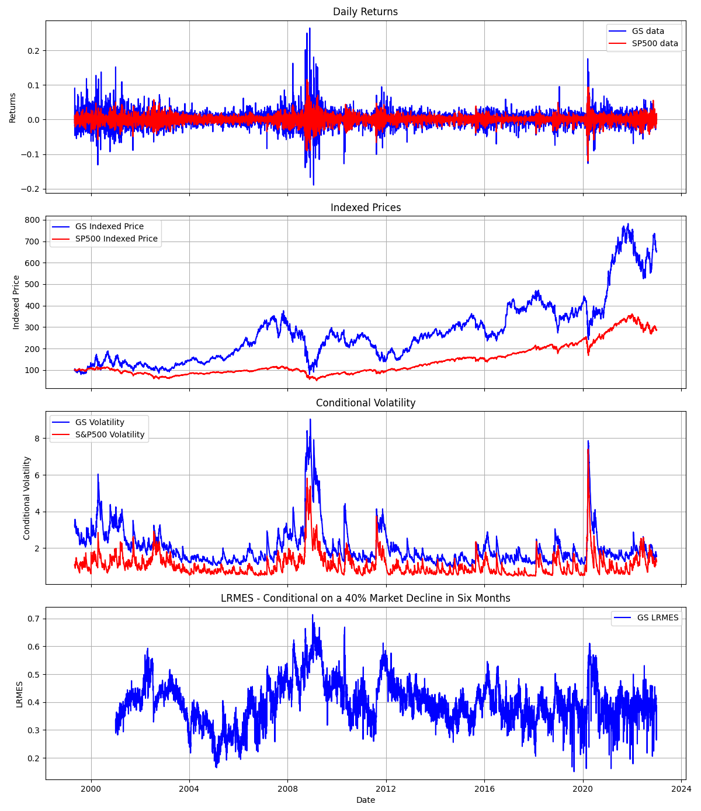

Long-Run Marginal Expected Shortfall (LRMES)#
Introduction#
Long-run Marginal Exepected Shortfall (LRMES) measures the expected firm return conditional on a systemic event, which is a market decline below a threshold \(C\) over a time horizon \(h\).
If the multiperiod arithmetic market return between \(t+1\) to \(t+h\) is \(R_{mt+1:t+h}\), then the systemic event is \(\{R_{mt+1:t+h}<C\}\).
\(LRMES_{it}\) for firm \(i\) at time \(t\) is then defined as
Brownlees and Engle (2017) use a GJR-GARCH(1,1) - DCC model to construct the LRMES predictions.
Tip
If you’re new to econommetrics, I suggest the following sequence of readings.
Univariate GARCH models:
GARCH(1,1), Generalized Autoregressive Conditional Heteroskedasticity modelling.
GJR-GARCH(1,1) extends GARCH to take into account asymmetric effect of negative news.
Multivariate GARCH models:
GARCH(1,1) - CCC captures both conditional variances and conditioal covariances, assuming constant correlation.
GARCH(1,1) - DCC further allows for time-varying correlations.
Finally,
GJR-GARCH(1,1) - DCC combines the above.
Bivariate GJR-GARCH-DCC#
Here, I dicuss the bivariate case in the context of computing SRISK, where \(i\) index the firm and \(m\) refers to the market.
Return series#
Let firm and market log returns be \(r_{it} = \log(1 + R_{it})\) and \(r_{mt} = \log(1 + R_{mt})\). Conditional on the information set \(\mathcal{F}_{t-1}\) available at time \(t-1\), the return pair has an (unspecified) distribution \(\mathcal{D}\) with zero mean and time-varying covariance,
Alternatively, I present below the constant mean form of return series,
where,
\(\mu=0\) assumes zero-mean. One can also assume a constant mean or even other structure.
\(\epsilon_{it} = \sigma_{it} z_{it}\), \(\epsilon_{mt} = \sigma_{mt} z_{mt}\), where \(\sigma_{it}\) is the conditional volatility at time \(t\).
\(z_{it}, z_{mt}\) are standarized residuals that follow an unknown bivariate distribution with zero mean and maybe some covariance structure. However, generally we can assume \(z_{it}\) and \(z_{mt}\) are i.i.d. standard normal
Important
In a DCC-GARCH model, assuming that the shock innovation \(z\) is standard normally distributed only implies that the conditional innovations are normal given the past information. It does not imply that the returns themselves are normally distributed.
The returns \(r\) in a GARCH framework are often modeled as:
where \(\mu_t\) is the conditional mean, \(\sigma_t\) is the conditional volatility, and \(z_t\) is the innovation term.
\(\mu_t\) could be modeled in many ways, perhaps as a function of past returns or other variables, and this will affect the distribution of \(r_t\).
\(\sigma_t\) is also a function of past volatilities and innovations, and hence varies over time, even if \(z_t\) is standard normal.
So, while \(z_t\) might be standard normal, \(\sigma_t \cdot z_t\) is normal but not standard normal, and \(\mu_t + \sigma_t \cdot z_t\) may not be normal at all depending on the form of \(\mu_t\). Therefore, the assumption about \(z\) being standard normal is about the standardized returns or innovations, not the raw returns \(r\). This is the reason why the return pair has an (unspecified) distribution \(\mathcal{D}\).
Conditional variance#
Specifically, the GJR-GARCH models the conditional variances as:
where \(I^-_{it} = 1\) if \(r_{it} < 0\) and \(I^-_{mt} = 1\) if \(r_{mt} < 0\).
Note
Brownlees and Engle (2017) use a
zero-mean assumption, so that \(r\) is used in the above equation
instead of the residual \(\epsilon\). They use \(\epsilon\) to denote
the standardized residual, which in this note is \(z\) to be consistent
with other notes of frds.
Dynamic correlation#
With these individual variances, the Dynamic Conditional Correlation (DCC) models the covariance matrix \(\mathbf{H}_t\) as:
where \(\mathbf{D}_t=\begin{bmatrix}\sigma_{it} & 0 \\\\ 0 & \sigma_{mt}\end{bmatrix}\), and \(\mathbf{R_t}=\begin{bmatrix}1 & \rho_t \\\\ \rho_t & 1\end{bmatrix}\) is the correlation matrix of the volatility-adjusted returns \(z = (r-\mu)/\sigma\) (standardized residuals from the return model).
A proxy process for R#
As discussed in GJR-GARCH(1,1) - DCC, Engle (2002) models the time-varying \(\mathbf{R}_t\) via a proxy process \(\mathbf{Q}_t\).
where \(\mathbf{Q}_{it}\) is the so-called pseudo correlation matrix.
The DCC then models the dynamics of \(\mathbf{Q}_{it}\) as
where,
\(\bar{\mathbf{Q}}_i\) is the unconditional correlation matrix of the firm and market adjusted returns (standardized residuals), and
\(\mathbf{z}_{t-1} = \begin{bmatrix}\epsilon_{it-1}/\sigma_{it} \\\\ \epsilon_{mt-1}/\sigma_{mt} \end{bmatrix} = \begin{bmatrix}(r_{it-1}-\mu_i)/\sigma_{it} \\\\ (r_{mt-1}-\mu_m)/\sigma_{mt} \end{bmatrix}\)
The Q process is updated as follows:
The dynamic conditional correlation \(\rho_t\) is given by:
Estimating GJR-GARCH-DCC#
The above model is typically estimated by a two-step QML estimation procedure. More extensive details on this modeling approach and estimation are provided in Engle (2009).
Note
Equation 4.33 in Engle (2009) shows that the log likelihood can be additively divided into two parts, one concerns the variance and the other concerns correlation. Therefore, we can solve for the variance and correlation parameters in two separate steps, hence “two-step” QML.
See the loglikelihood function section of GJR-GARCH(1,1) - DCC for more.
Specifically, we first estimate a GJR-GARCH(1,1) for each firm (and market)’s log return series to obtain the conditional volatilities \(\sigma\) and hence \(z = (r-\mu)/\sigma\). In the second step, we use the estimated coefficients to estimate the DCC model for each pair of firm returns and market returns.
This is done via frds.algorithms.GJRGARCHModel_DCC.
Computing LRMES#
LRMES is computed via a simulation approach. Appendix A. Simulation Algorithm for LRMES in Engle (2009) describes the exact steps to construct LRMES forecasts.
Tip
The general idea is to simulate market returns and use the estimated GJR-GARCH-DCC model to derive the corresponding firm returns. We then use the distribution of returns to estimate the firm’s LRMES.
Step 1. Construct GJR-GARCH-DCC standardized innovations for the training sample \(t=1,...,T\), where \(\xi_{it}\) is standardized, linearly orthogonal shocks of the firm to the market on day \(t\),
Note
Given the conditional correlation \(\rho\) between the standardized residuals \(z_i\) and \(z_m\) from a bivariate (GJR)GARCH model under Dynamic Conditional Correlation (DCC), we can compute \(z_i\) given \(z_m\) using the following formula:
Here, \(\xi\) is a standard normal random variable that is independent of \(z_m\),
Step 2. Sample with replacement \(S\times h\) pairs of \([\xi_{it}, z_{mt}]'\), which are used as the simulated innovations from time \(T+1\) to \(T+h\). Notice that in the algorithm, the innovations are simulated by resampling the standardized residuals of the GARCH-DCC rather than relying on parametric assumptions.
Note
Basically, we need residuals \(\epsilon_{mT+t}=\sigma_{mT+t}z_{mT+t}\) and \(\epsilon_{iT+t}=\sigma_{iT+t}z_{iT+t}\) for \(t=1,...,h\).
Requirements are
The standarized residuals \(z_{iT+t}\) and \(z_{mT+t}\) are i.i.d. normal.
\(\epsilon_{mT+t}\) and \(\epsilon_{iT+t}\) have a conditional correlation \(\rho_t\).
Given conditional variance, conditional correlation, \(z_{iT+t}\) has to be
We use the sampled (bootstrapped) \(h\) pairs of \([\xi_{it}, z_{mt}]'\) as \([\xi_{iT+t}, z_{mT+t}]'\) for \(t=1,...,h\).
Step 3. Use the pseudo sample of innovations as inputs of the DCC and (GJR)GARCH filters, respectively. Initial conditions are the last values of the conditional correlation \(\rho_{iT}\) and variances \(\sigma^2_{iT}\) and \(\sigma^2_{mT}\). This step delivers \(S\) pseudo samples of (GJR)GARCH-DCC logarithmic returns from period \(T+1\) to period \(T+h\), conditional on the realized process up to time \(T\), that is
Specifically, in a simulation \(s\) with simulated innovations \([\xi^s_{iT+t}, z^s_{mT+t}]'\), for the 1-step-ahead prediction, compute \(\hat{\sigma}^2_{iT+1}\) and \(\hat{\sigma}^2_{mT+1}\),
where, \(\sigma^2_{iT}\) and \(\sigma^2_{mT}\) are the last conditional variances, \(\epsilon_{iT}\) and \(\epsilon_{mT}\) are the last residuals. All of these are known.
The updated \(Q_{T+1}\) is given by
where \(z_{iT}\) and \(z_{mT}\) are the last standardized residuals. \(q_{iT}\), \(q_{mT}\) and \(q_{imT}\) are from the last \(Q_T\). All of these are known.
The 1-step-ahead conditional correlation \(\hat{\rho}_{iT+1}\) is given by:
This conditional correlation \(\hat{\rho}_{iT+1}\) is then used to compute the 1-step-ahead returns given the 1-step-ahead forecast of conditional variances \(\hat{\sigma}^2_{iT+1}\) and \(\hat{\sigma}^2_{mT+1}\), and innovations \([\xi^s_{iT+1}, z^s_{mT+1}]'\),
Then, for \(h>1\), we use the \(h-1\) forecasts as inputs.
where,
Then, update DCC coefficients,
The dynamic conditional correlation \(\hat{\rho}_{iT+h}\) is given by:
This conditional correlation \(\hat{\rho}_{iT+h}\) is then used to compute the h-step-ahead returns given the h-step-ahead forecast of conditional variances \(\hat{\sigma}^2_{iT+h}\) and \(\hat{\sigma}^2_{mT+h}\), and innovations \([\xi^s_{iT+h}, z^s_{mT+h}]'\),
So we have in this simulation \(s\) a set of market and firm (log) returns, \(r^s_{iT+t}\) and \(r^s_{mT+t}\), \(t=1,\dots,h\).
Step 4. Construct the multiperiod arithmetic firm (market) return of each pseudo sample,
Step 5. Compute LRMES as the Monte Carlo average of the simulated multiperiod arithmetic returns conditional on the systemic event,
Tip
This LRMES estimate can then be used to compute SRISK.
References#
Brownlees and Engle (2017), SRISK: A Conditional Capital Shortfall Measure of Systemic Risk, Review of Financial Studies, 30 (1), 48–79.
Glosten, L. R., Jagannathan, R., & Runkle, D. E. (1993), “On the Relation Between the Expected Value and the Volatility of the Nominal Excess Return on Stocks.” The Journal of Finance, 48(5), 1779-1801.
Engle, R. (2002), “Dynamic Conditional Correlation: A Simple Class of Multivariate Generalized Autoregressive Conditional Heteroskedasticity Models.” Journal of Business & Economic Statistics, 20(3), 339-350.
API#
- frds.measures.LRMES#
alias of
LongRunMarginalExpectedShortfall
- class frds.measures.LongRunMarginalExpectedShortfall(firm_returns: ndarray, market_returns: ndarray)[source]#
Long-Run Marginal Expected Shortfall (LRMES)
- __init__(firm_returns: ndarray, market_returns: ndarray) None[source]#
- Parameters:
firm_returns (np.ndarray) –
(n_days,)array of the firm raw returns.market_returns (np.ndarray) –
(n_days,)array of the market raw returns.
Note
Raw returns should be used! They are automatically converted to log returns. Do NOT use percentage returns.
- estimate(h=22, S=10000, C=-0.1, random_seed=42) float[source]#
h-step-ahead LRMES forecasts conditional on a systemic event of market decline C
- Parameters:
h (int, optional) – h-period-ahead prediction horizon. Defaults to 22.
S (int, optional) – sample size used in simulation to generate LRMES forecasts. Defaults to 10000.
C (float, optional) – market decline used to define systemic event. Defaults to -0.1, i.e. -10%.
random_seed (int, optional) – random seed. Defaults to 42.
- Returns:
the firm’s LRMES forecast
- Return type:
float
- simulation(innovation: ndarray, C: float, firm_var: float, mkt_var: float, firm_resid: float, mkt_resid: float, a: float, b: float, rho: float, Q_bar: ndarray) Tuple[float, bool][source]#
A simulation to compute the firm’s return given the parameters. This method should be used internally.
- Parameters:
innovation (np.ndarray) –
(h,2)array of market and firm innovationsC (float) – market decline used to define systemic event. Defaults to -0.1, i.e. -10%.
firm_var (float) – the firm conditional variance at time \(T\), used as starting value in forecast
mkt_var (float) – the market conditional variance at time \(T\), used as starting value in forecast
firm_resid (float) – the firm residual at time \(T\), used as starting value in forecast
mkt_resid (float) – the market residual at time \(T\), used as starting value in forecast
a (float) – DCC parameter
b (float) – DCC parameter
rho (float) – the last conditional correlation at time \(T\), used as starting value in forecast
Q_bar (np.ndarray) –
(2,2)array of sample correlation matrix of standarized residuals
- Returns:
tuple of the firm return and whether a systemic event occurs
- Return type:
Tuple[float, bool]
Examples#
Download daily price data for GS and SP500 and compute returns.
>>> from frds.measures import LRMES
>>> import yfinance as yf
>>> import numpy as np
>>> data = yf.download(['GS', '^GSPC'], start='1999-01-01', end='2022-12-31')['Adj Close']
>>> data['GS'] = data['GS'].pct_change()
>>> data['^GSPC'] = data['^GSPC'].pct_change()
>>> data = data.dropna()
Compute LRMES, conditioal on a 40% market decline over the next six months.
>>> lrmes = LRMES(data['GS'], data['^GSPC'])
>>> lrmes.estimate(S=10000, h=22*6, C=-0.4)
0.3798383812883635
Additionally, below is an example output for estimating the daily LRMES for GS using parallel computing.
Note
These estimates are similar to NYU’s V-Lab, which is more stable and on average higher. V-Lab’s simulated LRMES is typically above 40%.
Possible reasons include differences in
the training sample
the (GJR)GARCH-DCC model specification and estimation, where V-Lab uses a zero-mean return model but I use a constant mean
the number of simulations, sampling of past residuals, etc.
This is computed using the following code.
from concurrent.futures import ProcessPoolExecutor
from frds.measures import LRMES
import numpy as np
import pandas as pd
import yfinance as yf
import matplotlib.pyplot as plt
def compute_lrmes_for_date(args):
date, data = args
if date.year < 2001:
return None
sub_data = data.loc[:date]
lrmes = LRMES(sub_data["GS"], sub_data["^GSPC"]).estimate(h=22 * 6, C=-0.4)
print((date, lrmes))
return (date, lrmes)
if __name__ == "__main__":
# Download daily price data for GS and SP500
data = yf.download(["GS", "^GSPC"], start="1994-01-01", end="2022-12-31")["Adj Close"]
data["GS"] = data["GS"].pct_change()
data["^GSPC"] = data["^GSPC"].pct_change()
data = data.dropna()
data["GS_Price"] = (1 + data["GS"]).cumprod() * 100
data["^GSPC_Price"] = (1 + data["^GSPC"]).cumprod() * 100
with ProcessPoolExecutor() as executor:
lrmes_values = list(
executor.map(
compute_lrmes_for_date,
[(d, data) for d in data.index.unique()],
)
)
lrmes_values = [x for x in lrmes_values if x is not None]
lrmes_df = pd.DataFrame(lrmes_values, columns=["Date", "LRMES"]).set_index("Date")
data = pd.merge_asof(data, lrmes_df, left_index=True, right_index=True, direction="backward")
model = LRMES(data["GS"], data["^GSPC"])
model.dcc_model.fit()
data["GS Volatility"] = np.sqrt(model.dcc_model.model1.sigma2)
data["S&P500 Volatility"] = np.sqrt(model.dcc_model.model2.sigma2)
fig, axs = plt.subplots(4, 1, figsize=(12, 15), sharex=True)
# Plot data
axs[0].plot(data["GS"], label="GS data", color="blue")
axs[0].plot(data["^GSPC"], label="SP500 data", color="red")
axs[0].set_title("Daily Returns")
axs[0].set_ylabel("Returns")
axs[0].legend()
axs[0].grid(True)
axs[1].plot(data["GS_Price"], label="GS Indexed Price", color="blue")
axs[1].plot(data["^GSPC_Price"], label="SP500 Indexed Price", color="red")
axs[1].set_title("Indexed Prices")
axs[1].set_ylabel("Indexed Price")
axs[1].legend()
axs[1].grid(True)
axs[2].plot(data["GS Volatility"], label="GS Volatility", color="blue")
axs[2].plot(data["S&P500 Volatility"], label="S&P500 Volatility", color="red")
axs[2].set_title("Conditional Volatility")
axs[2].set_ylabel("Conditional Volatility")
axs[2].legend()
axs[2].grid(True)
axs[3].plot(data["LRMES"], label="GS LRMES", color="blue")
axs[3].set_title("LRMES - Conditional on a 40% Market Decline in Six Months")
axs[3].set_xlabel("Date")
axs[3].set_ylabel("LRMES")
axs[3].legend()
axs[3].grid(True)
plt.tight_layout()
plt.show()
plt.savefig("./GS_LRMES.png")